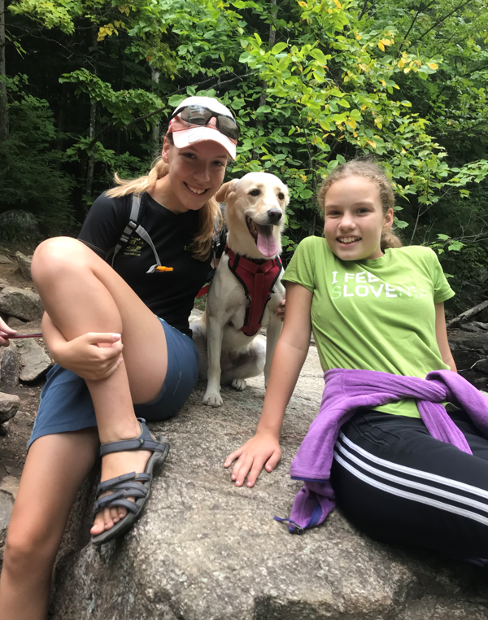

I have always loved dogs. We got my dog, Addie, about six months ago, from a shelter near Montreal. She was originally rescued from the streets of Mexico, and is therefore very nervous around strangers. It took her quite a while to warm up to our family, but every day she gets a bit more comfortable. Recently, she has started initiating interactions with us on her own and coming up for affection! We are very proud of her progress.
Here is a link to my second page. Here is a picture of Addie:
